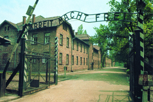
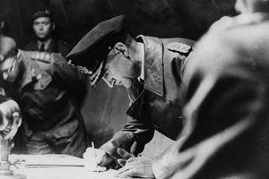
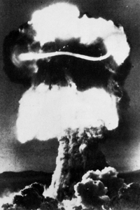

Lezione 19  La seconda guerrra mondiale
La seconda guerrra mondiale

-
145
484
-
155
437
-
195
805
-
165
463

AUSCHWITZ
Il 27 gennaio il campo di sterminio di Auschwitz viene liberato dalle truppe sovietiche. Vengono trovati settemila prigionieri ancora in vita, migliaia di indumenti, e otto tonnellate di capelli umani imballati e pronti per il trasporto. Quasi tutte le camere a gas e i forni crematori erano stati distrutti per nascondere le prove del genocidio. Non si sa con precisione quante persone siano state uccise nel campo. Sicuramente oltre un milione, forse un milione e mezzo.
Questa celeberrima fotografia dell'ingresso del campo è dolorosamente simbolica di quelle atrocità.
REIMS
La Germania è sconfitta. Il 20 aprile Berlino viene raggiunta dai sovietici, che avanzano casa per casa. Hitler si uccide nel suo bunker il 30 aprile con Eva Braun, che ha sposato il giorno prima. I loro corpi vengono bruciati, ma sulla identificazione dei resti non esistono dubbi.
La resa incondizionata delle forze armate tedesche viene firmata il 7 maggio a Reims, in Francia, di fronte agli alleati, dall'ammiraglio Gerhard Wagner. Una analoga cerimonia si svolge il giorno dopo a Berlino, davanti ai generali sovietici.
HIROSHIMA E NAGASAKI
Sul Giappone, che non ha firmato la resa, vengono lanciate le prime bombe atomiche della storia.
La prima, il 6 agosto, distrugge completamente Hiroshima, provocando 100 mila morti. La seconda, il 9 agosto, colpisce parzialmente Nagasaki, provocando 60 mila morti. Ma alla fine le vittime delle radiazioni saranno molte di più.
La resa incondizionata del Giappone viene annunciata alla nazione da un messaggio radiofonico dell'imperatore Hirohito il 15 agosto, ma viene ufficialmente firmata soltanto il 2 settembre.DONGO
A Dongo, sul lago di Como, Mussolini viene riconosciuto e arrestato dai partigiani mentre tenta di fuggire in Svizzera travestito da tedesco.
E' il 27 aprile, la Repubblica Sociale Italiana si è sciolta, le grandi città del nord vengono liberate dai partigiani scesi dalle montagne. In quelle ore convulse parte dal Comitato di Liberazione Nazionale l'ordine di ucciderlo, che viene eseguito il giorno dopo.
Con lui viene fucilata Claretta Petacci, che non lo ha voluto abbandonare. Nelle stesse ore vengono uccisi altri gerarchi fascisti. I loro cadaveri, insieme a quelli di Mussolini e della Petacci, vengono esposti all'ira della folla in piazzale Loreto a Milano, dove l'anno prima erano stati fucilati quindici partigiani.WARM SPRING
Il 12 aprile muore a Warm Spring, per un'emorragia cerebrale, Franklin Delano Roosevelt, l'unico presidente americano ad aver governato per quattro mandati consecutivi.
Aveva guidato con mano ferma gli Stati Uniti in una guerra che non tutti volevano, dopo aver dato un contributo essenziale a farli uscire dalla crisi economica del 1929 con il New Deal, il più vasto programma di riforme economiche e sociali mai realizzato in un paese occidentale.
Poco prima di morire, tra il 4 e l'11 febbraio del 1945, aveva partecipato con Churchill e Stalin alla conferenza di Yalta, dove vennero decisi gli assetti politici del mondo che stava uscendo dal conflitto..